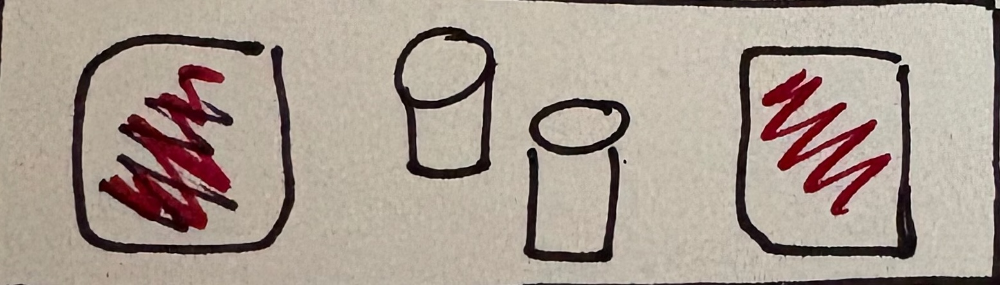

Sunbutter Jelly Sandwich

I LOVE this sandwich.
| Ingredients | |
|---|---|
| Bread | 2 slices |
| Sunbutter | 1 tbsp |
| Jam | 1 tbsp |
Instructions
Spread jam & sunbutter. Combine.

I LOVE this sandwich.
| Ingredients | |
|---|---|
| Bread | 2 slices |
| Sunbutter | 1 tbsp |
| Jam | 1 tbsp |
Spread jam & sunbutter. Combine.